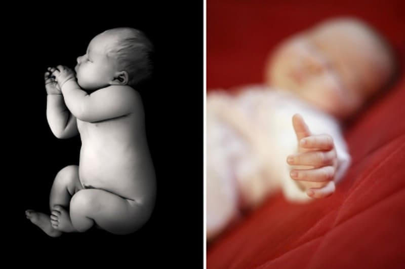
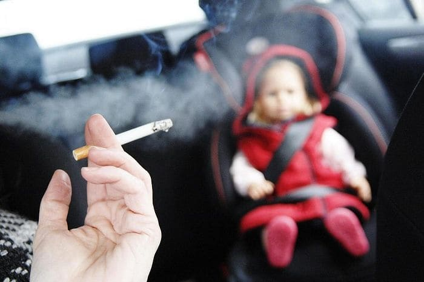

До недавнего времени общепринятым мнением относительно синдрома внезапной детской смерти (СВДС) было следующее: «Никто не знает, почему это случается, и родители ничего не могут сделать для предотвращения». Современные исследования ставят под сомнение это устаревшее суждение. Для родителей, которые переживают по этому поводу, мы предлагаем современные сведения о СВДС и, что более важно, информацию о том, как снизить риск трагедии.

Прежде чем начать, хотим предупредить: нижеприведенное обсуждение призвано информировать, а не оскорбить вас; вдохновить, а не напугать. Разгадав эту мрачную загадку, родители смогут меньше волноваться. Зная правду, они смогут сами разработать собственную программу снижения рисков. Родители не должны чувствовать себя беспомощными. Мы не говорим, что, если вы не примете описанные ниже меры, ваш ребенок умрет. Кроме того, случаи СВДС – редкость . Но наши предложения могут снизить риск СВДС именно для вашего ребенка. Предложения основаны на самых современных исследованиях СВДС, а также на нашем собственном опыте. Все приведенные советы тщательно проверены. В ожидании дальнейших исследований, которые смогут помочь нам лучше понять и предотвратить эту трагедию, мы приводим наш «хит-парад».
Наши предположения по снижению риска СВДС таковы:
Естественный стиль воспитания и определенная оздоровительная профилактика могут снизить риск СВДС.
Вот более подробные практические рекомендации в поддержку данной гипотезы.
• Обеспечьте себе дородовое наблюдение.
• Не курите возле ребенка.
• Кладите ребенка спать на спину.
• Кормите грудью.
• Не допускайте перегрева ребенка во сне.
• Следите за здоровьем ребенка.
• Обеспечьте ребенку безопасный сон.
• Выберите для себя естественный стиль воспитания.
• Спите вместе со своим ребенком.
Некоторые из предлагаемых нами мер покажутся вам очевидными. И это действительно так. Какие-то будут для вас в новинку, поэтому мы подробно обсудим каждую. Но для того, чтобы стало понятно, как мы пришли к этим рекомендациям, прежде всего позвольте объяснить, как развивалось наше понимание СВДС.
Я (доктор Билл) впервые столкнулся с СВДС в самом начале своей карьеры. Во время осмотров я обычно спрашивал родителей, есть ли у них какие-либо опасения. «СВДС? – спрашивали они. – А почему это случается?»
«Не знаю», – был мой ответ.
«Как мы можем это предотвратить?» – настаивали они.
«Не могу точно сказать», – лавировал я.
Каждый раз, заканчивая этот бесполезный разговор, я чувствовал, что не оправдал ожиданий родителей. Ведь казалось, что нет способа избежать СВДС. Было особенно невыносимо, когда я пытался утешить родителей, потерявших своего ребенка в результате СВДС. Я сокрушался над их утратой и сокрушался над своей неспособностью объяснить причины произошедшего и найти способ, как они могли бы избежать подобной трагедии в будущем.
Будучи родителем, я хотел бы иметь список мер, приняв которые, я мог бы предотвратить беду. Будучи врачом, я хотел бы, чтоб эти меры были тщательно изучены и обоснованы. И я решил составить такой список.
В течение следующих двадцати лет я изучал самые авторитетные исследования в области СВДС. Вопреки расхожему мнению, СВДС вовсе не такая уж мистика. Есть достаточно сведений, чем является СВДС и чем он не является. Но только недавно эти ценные сведения попали из исследовательской лаборатории в руки родителей. Я также отметил, что авторы в своих книгах неохотно освещают этот аспект с профилактической точки зрения. Но по собственному опыту и, надеюсь, по опыту тех, кто читает эту книгу, у хорошо информированных родителей меньше поводов для беспокойства.
В исследованиях, которые были мной изучены, красной нитью проходили два факта о СВДС: то, что это случается во сне, и то, что это происходит в возрасте от 2 до 4 месяцев.
Каковы истинные причины СВДС? И почему именно возраст от 2 до 4 месяцев такой уж уязвимый? Я решил ответить на эти вопросы.
Я разделил исследователей на 2 группы – одни проводили научные исследования и изучали психологические характеристики детей, подверженных СВДС, другие собирали статистические данные о характере и факторах риска СВДС.
Оба эти подхода играли важную роль в решении поставленной задачи, но мне казалось, что нужен еще один подход. Нужно было узнать, как определенные условия сна могут повлиять на ребенка, находящегося в группе риска, в особенности в рискованной ситуации (во сне) и в течение рискованного периода (первые 6 месяцев). Я хотел заполнить этот пробел в исследованиях.
Поскольку СВДС больше всего напоминает расстройство сна, я задался вопросом, может ли родитель, в основном мать, повлиять на способность ребенка пробуждаться путем изменения условий сна. Я выработал гипотезу: совместный сон может снизить риск СВДС.
И вот первый случай, рассмотренный нами в подтверждение этой гипотезы. В кроватке ребенка, который находился в группе риска СВДС, был поставлен электронный дыхательный монитор. В возрасте примерно трех месяцев у ребенка стало все чаще останавливаться дыхание во сне, о чем свидетельствовали сигналы монитора. Но как только мать взяла ребенка к себе в постель, сигналы тревоги прекратились. Когда ребенок отправлялся спать в свою кроватку, сигналы возобновлялись.
В 1986 году меня пригласили на Международный конгресс педиатров в Гонолулу для того, чтоб я представил свою гипотезу и этот случай. Моя презентация называлась «Защитный эффект совместного сна. Может ли он предотвратить СВДС?» Она была призвана стимулировать ученых подтвердить или развенчать мою теорию.
В течение следующих лет исследовательские организации проявляли все больший и больший интерес к изучению связи стиля воспитания ребенка и СВДС. Национальные институты здравоохранения начали финансировать исследования в области совместного сна.
С 1988 года началась волна исследований в области профилактики СВДС.
В начале 1992 года два подарка свыше позволили нам продолжить изучение нашей гипотезы: новые компьютерные технологии сделали возможным проведение исследований прямо дома и еще один малыш появился в домашней лаборатории Сирсов. Наши удивительные открытия будут обсуждаться далее.
Вот из такой предыстории мы вывели факторы, позволяющие снизить риск СВДС.
Факты о СВДС
Синдром внезапной детской смерти (известный также как смерть в колыбельке) – это внезапная, необъяснимая смерть младенца в возрасте до года, причины которой не могут быть определены даже после серии посмертных исследований, включающих аутопсию, изучение места смерти и истории болезни.
В США от СВДС погибает примерно 1 из тысячи младенцев в возрасте от 2 до 6 месяцев. Пик риска СВДС приходится на возраст от 2 до 4 месяцев. 95 % случаев смерти от СВДС происходят в возрасте до 6 месяцев. Трагедия, как правило, происходит между полуночью и 6 часами утра, чаще всего в декабре-январе.
В США порядка 300 младенцев умирают от СВДС ежегодно. Это самая распространенная причина смерти младенцев в возрасте от 1 месяца до года.
В то время как большинство младенцев, умерших от СВДС, не показывали никаких тревожных признаков, некоторые дети имеют несколько больший риск СВДС, чем другие. К ним можно отнести:
• недоношенных детей;
• детей, у которых наблюдалась остановка дыхания (апноэ) в первые недели жизни;
• детей, жизни которых что-либо угрожало (к примеру, остановка дыхания, когда ребенок бледнел, синел и становился вялым;
• детей, матери которых не имели должного дородового наблюдения;
• детей, растущих в неблагоприятных социально-экономических условиях.
Следует заметить, однако, что даже дети из перечисленных групп риска имеют менее 1 % шансов пострадать СВДС. СВДС нельзя спровоцировать прививкой, он не появляется вследствие удушья, и он не заразен.
Причина СВДС неизвестна. Есть несколько теорий, но ни одна не доказана. Преобладает теория, что СВДС – это расстройство сна.
Исследователи предполагают, что дети с риском СВДС имеют некоторые физиологические отличия. Снаружи эти дети выглядят совершенно здоровыми и ведут себя как все остальные малыши, но на самом деле у этих детей незрелая дыхательная система.
В глубине человеческого мозга находится центр контроля регуляции дыхания. Как, к примеру, обогреватель имеет специальный контрольный механизм, который включает или отключает прибор, если температура в помещении поднимается или опускается ниже заданного уровня. Также и дыхательный центр в нашем мозге призван регулировать уровень кислорода в крови. Если уровень кислорода в крови падает слишком низко или уровень углекислого газа поднимается слишком высоко (что случается при остановке или задержке дыхания), этот дыхательный центр тут же запускает механизм стимуляции дыхания. Этот защитный механизм срабатывает, даже если человек пребывает в глубоком сне. Но по неизвестным причинам у некоторых малышей механизм не запускает дыхание.
Если говорить вкратце, дети, имеющие проблемы с просыпанием, находятся в группе риска СВДС.
Основываясь на современных исследованиях СВДС, включая наши собственные теории, мы предлагаем вам несколько советов по снижению риска СВДС для вашего ребенка.
1. Обеспечьте себе хорошее дородовое наблюдение.
Сделайте все, чтоб ваша беременность протекала спокойно, и обеспечьте себе должное ведение беременности. Доказано, что риск СВДС возрастает у детей, чьи матери курили во время беременности или употребляли наркотики, а также не наблюдались должным образом во время беременности. Факторы риска в этом случае неизвестны, но вероятней всего, причиной является хроническая нехватка кислорода и высокий риск недоношенности этих детей.
2. Не курите возле малыша.
Исследования подтвердили, что курение является самым явным фактором риска и несомненно увеличивает возможность СВДС. Риск возрастает пропорционально количеству выкуренных рядом с ребенком сигарет. Ученые из Новой Зеландии установили, что у детей курящих родителей риск возникновения СВДС в семь раз выше. Механизм возникновения СВДС в данном случае до конца не изучен. Возможно, речь идет о комбинации нескольких факторов. Вероятно, дыхательные пути ребенка, подверженного воздействию сигаретного дыма, забиваются. Недавно учеными было установлено, что дети курящих родителей имеют в крови определенные химические компоненты, указывающие на постоянную гипоксию.

3. Кладите ребенка спать на спину.
Бытовало мнение, что ребенку лучше спать на животике. Рациональное зерно этого старинного совета в том, что, если ребенок срыгнет или его стошнит во сне, содержимое его желудка вытечет изо рта, в то время как в положении на спине рвотные массы могут попасть ребенку в легкие. Современные исследования ставят под сомнение это распространенное мнение. Ученые, занимающиеся исследованием СВДС, доказали, что ребенок крайне редко способен проглотить то, что он срыгивает. За последнее десятилетие международные кампании в поддержку младенческого сна на спине снизили количество случаев СВДС на 40–50 %.
Причины того, почему сон на спине или на боку снижает риск СВДС, непонятны. Основной довод таков: дети, спящие на спине, легче просыпаются. Другая теория говорит о том, что на спине дети реже перегреваются. Если ребенок лежит на спине или на боку, его внутренние органы находятся в более «открытом» положении и имеют возможность охлаждаться. Возможно также, что в положении на животике ребенок может уткнуться носом в мягкую поверхность и дышать углекислым газом, который сам же и выдыхает.
Хотелось бы заверить родителей, что даже если вы кладете малыша спать на животик, это не означает, что он может от этого умереть. Исследования показывают исключительно статистические данные об увеличении риска СВДС.
Класть ли ребенка спать на спину или на бок? Одна из причин, почему поза на спине нравится очень многим, – то, что ребенок, спящий на боку, может перевернуться на живот, что вызывает опасения. Но по нашему опыту дети чаще переворачиваются на спину, так как перевернуться на живот им попросту мешают руки. Мы пришли к выводу, что в первые месяцы некоторые дети лучше спят на боку. Укладывая своего малыша спать на бок, вытяните его нижнюю руку вперед, чтоб она мешала ему перевернуться на животик..
4. Кормите ребенка грудью.
Исследования подтвердили то, что мы уже давно подозревали: у детей, находящихся на грудном вскармливании, гораздо ниже риск возникновения СВДС. Новозеландские ученые доказали, что риск возникновения СВДС у детей, находящихся на искусственном вскармливании, выше в 3 раза. Даже крупномасштабные исследования, проведенные Американским национальным институтом, доказали, что детей, умерших вследствие СВДС, значительно реже прикладывали к груди или отлучили от нее слишком рано.
Марта, Уильям, Роберт, Джеймс Сирс"Ваш малыш от рождения до двух лет"